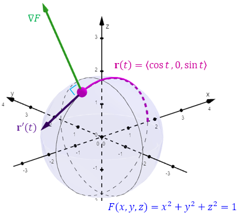
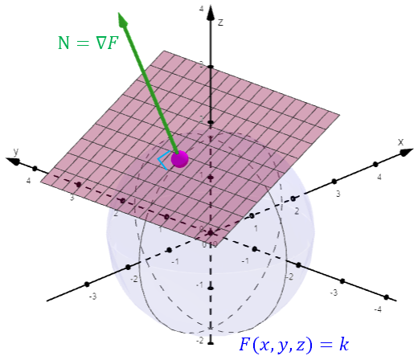
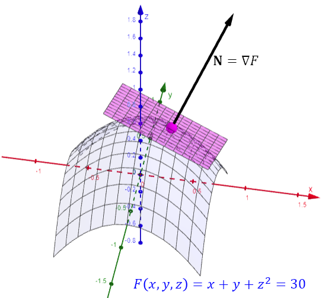

Lesson 23: Equations for Tangent Planes
A surface produced by an equation of the form \(F(x, y, z) = k\) is called a level surface.
We will illustrate this with an example, using the level surface below, which is the sphere in the figure.

We want to see that \(\nabla F\) is normal, or perpendicular, to the sphere. We use the curve traced out by the vector-valued function \(\mathbf{r}(t) = \langle \cos t, 0, \sin t \rangle\). Recall, two vectors are orthogonal if and only if their dot product is zero. Because \(\mathbf{r}'(t)\) is tangent to the sphere, showing \(\nabla F \dotp \mathbf{r}'(t) = 0\) shows \(\nabla F\) is normal to the sphere along this curve.
Let's Complete These Tasks
- Show that \(\mathbf{r}(t)\) traces out a curve on the sphere.
- Show that \(\nabla F \dotp \mathbf{r}'(t) = 0\).
Task 1: substitute \(x = \cos t\), \(y = 0\), and \(z = \sin t\) into the equation of the sphere.
Every point of the curve satisfies the equation, so the curve lies on the sphere.
Task 2: find the gradient and the tangent vector along the curve.
The gradient is orthogonal to the tangent vector, so it is normal to the sphere along this curve.
Consider the level surface \(F(x, y, z) = k\). Recall the general equation of a plane, where \((x_0, y_0, z_0)\) is on the plane and \(\mathbf{N} = \langle A, B, C \rangle\) is a vector normal to the plane.

We now understand that the normal vector \(\mathbf{N}\) to the tangent plane comes from the gradient.
Normal Vector to a Tangent Plane
Essential Idea: We find the equation of the tangent plane by using the gradient as the normal vector to the plane.
An Example
The equation of a level surface is given below. Find an equation of the tangent plane to the surface at the point (2, 3, 5).
Use the gradient, evaluated at the point, as the normal vector.
For the point \((x_0, y_0, z_0)\), use \((2, 3, 5)\).

The method above applies to a level surface, an equation of the form \(F(x, y, z) = k\). For a surface of the form \(z = f(x, y)\), we use the formula below.
Tangent Plane to z = f(x, y)
Write the surface as a level surface.
Find the partial derivatives.
The gradient gives a vector normal to the plane. Evaluate it at the point.
Now use the general equation of a plane, and rearrange.
An Example
Find an equation of the tangent plane to the graph of the function below at the point (1, 3, 2).
We are given \((x_0, y_0, z_0) = (1, 3, 2)\). Next, find and evaluate the partial derivatives.
Use these results in the formula.
Multiply both sides by 3, and simplify.